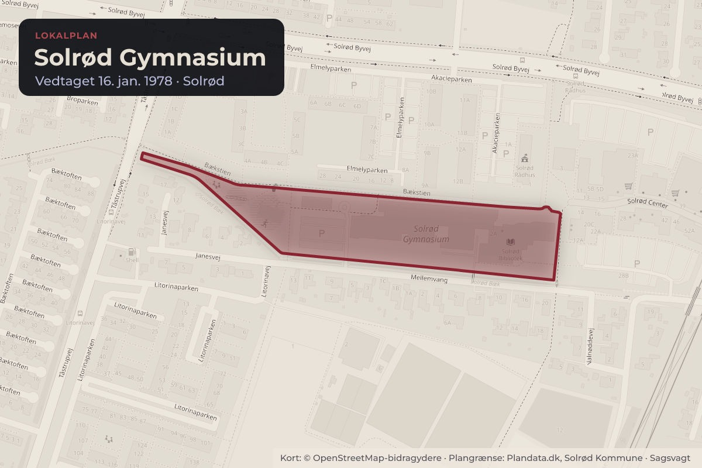
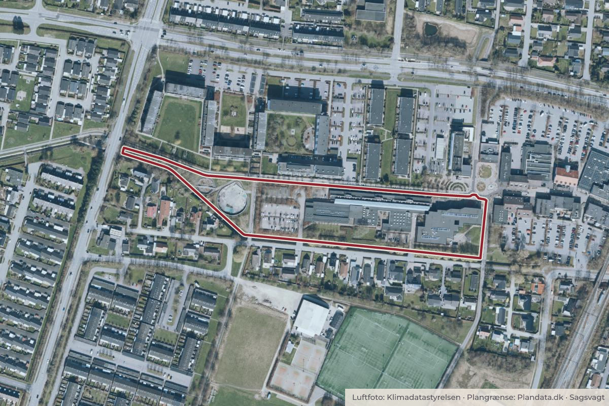

Besluttet 12. august, Natur-, trafik- og planudvalget, Solrød
Godkendelse af igangsættelse af tillæg til lokalplan ved Solrød Gymnasium
Administrationen indstiller, at igangsættelse af tillæg til lokalplan 303.1 Solrød Gymnasium godkendes.

Kort: © OpenStreetMap-bidragydere. Plangrænse: Plandata.dk, Solrød Kommune.

Kort fortalt
- Hvem
- Natur-, trafik- og planudvalget, Solrød Kommune
- Hvornår
- Onsdag 12. august 2026
- Status
- Besluttet. Tiltrådt.
Læs hele sagen Kommunens egen tekst
Indstilling
Administrationen indstiller, at igangsættelse af tillæg til lokalplan 303.1 Solrød Gymnasium
godkendes.
Sagsfremstilling
Natur-, trafik- og planudvalget og Senior-, kultur- og fritidsudvalget drøftede på udvalgsmødet den 10.
juni 2026 mulighederne for at afholde musikarrangementer i bibliotekshaven i Solrød bymidte. Som
opfølgning på udvalgets drøftelse fremlægger administrationen oplæg til igangsættelse af et tillæg til
lokalplan 303.1 Solrød Gymnasium.
Bibliotekshaven er et centralt grønt område i Solrød bymidte (bilag 1), som er kommunalt ejet. Den
gældende lokalplan for bibliotekshaven 303.1 Solrød Gymnasium (bilag 2) fastslår, at området kun må
bruges til offentlige formål (gymnasium, hovedbibliotek m.v.). Mindre, midlertidige arrangementer afholdt
af gymnasiet og biblioteket kan allerede i dag rummes inden for lokalplanen. Musikarrangementer af en
mere offentlig karakter kræver en ændring af lokalplanen.
Formålet med at udarbejde et tillæg til lokalplanen er derfor at skabe mulighed for, at der kan afholdes
musikarrangementer i bibliotekshaven, f.eks. for at understøtte Solrød Musikfestival, som afholdes i
august.
Et tillæg til en lokalplan betyder, at der foretages mindre ændringer til enkelte bestemmelser, men at
hovedstrukturen og størstedelen af indholdet fastholdes. Denne tilgang kan vælges som alternativ til en
helt ny lokalplan, når der kun er tale om mindre ændringer, som vurderes at kunne rummes inden for
lokalplanens hovedformål.
Tillægget skal supplere de gældende anvendelsesbestemmelser for bibliotekshaven, som udpeges som
et nyt delområde, og give mulighed for kulturelle formål, herunder musikarrangementer. Tillægget
forventes ikke at indeholde ændringer til andre arealer eller bestemmelser i den gældende lokalplan. I
lokalplanens redegørelse, som ikke er bindende, kan intentioner og forudsætninger for arrangementerne
kort beskrives.
Et lokalplantillæg skaber alene det planmæssige grundlag for aktiviteter i bibliotekshaven, som danner
grundlag for byggetilladelser. Forhold som f.eks. vilkår for brug af arealet, håndtering af støj og antal
arrangementer pr. år skal derfor fortsat koordineres administrativt af kommunen. Kommunen ejer jorden
og kan dermed også stille krav om brugen af arealet i forhold til blandt andet antal af arrangementer.
Biblioteket og andre brugere af bibliotekshaven kan fortsat bruge haven til de arrangementer, som der
foregår i dag. Med lokalplanen bliver det tydeligt, at der er mulighed for at afholde arrangementer af en
mere offentlig karakter.
Administrationen anbefaler, at tillæg til lokalplanen igangsættes, da det er i tråd med byrådets intention
om at skabe mere aktivitet og byliv i Solrød bymidte og understøtte udviklingen af Solrød Musikfestival.
Det er ikke et lovkrav, at der udarbejdes et tillæg til lokalplan 303.1 Solrød Gymnasium, men det er en
forudsætning for, at der kan afholdes musikarrangementer i bibliotekshaven.
Høring og inddragelse
Hvis udvalget vælger at igangsætte tillægget til lokalplan 303.1 Solrød Gymnasium, vil administrationen
udarbejde et forslag, som sendes i offentlig høring i 4 uger. Der afholdes borgermøde i høringsperioden.
Finansiering
Sagen har ingen bevillingsmæssige konsekvenser.
Kompetence til afgørelse
Natur-, trafik- og planudvalget.
Beslutning
Tiltrådt.
Kilde: Solrød Kommune, Natur-, trafik- og planudvalget, referat fra mødet onsdag 12. august 2026, punkt 7. Læs den originale sag hos kommunen.